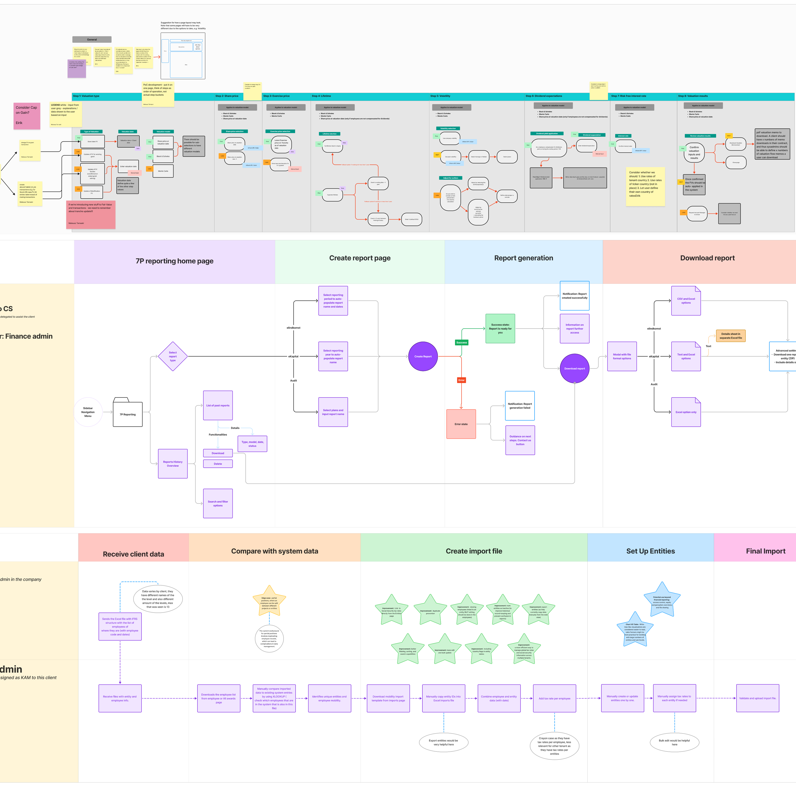
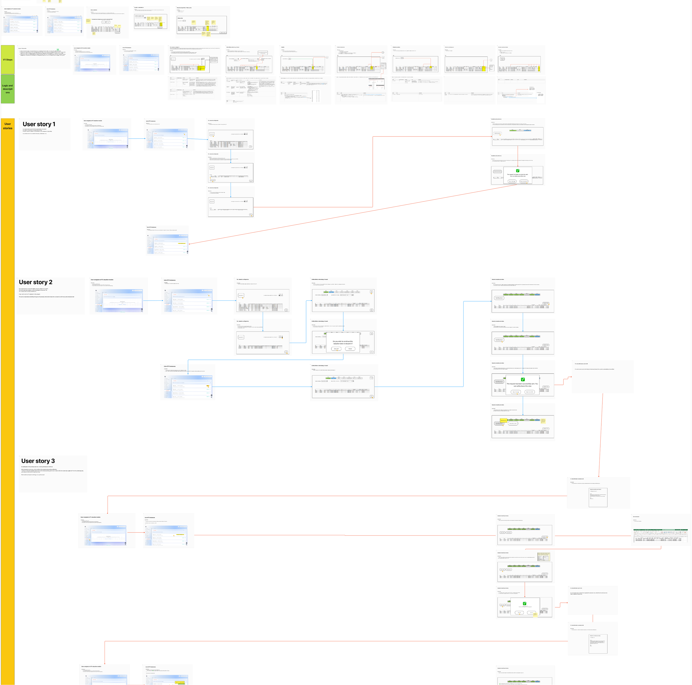
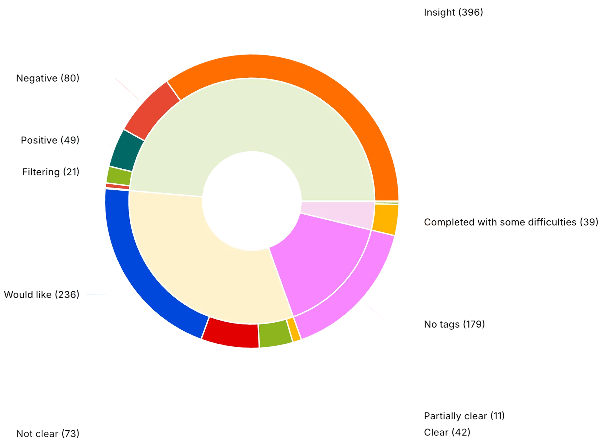
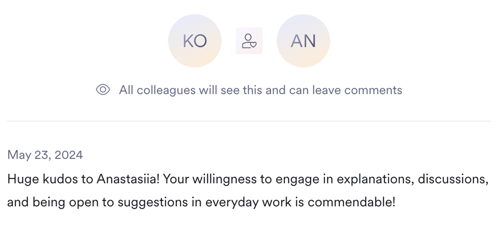
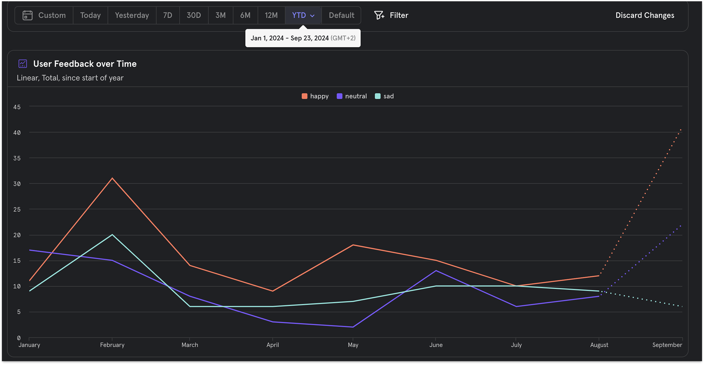
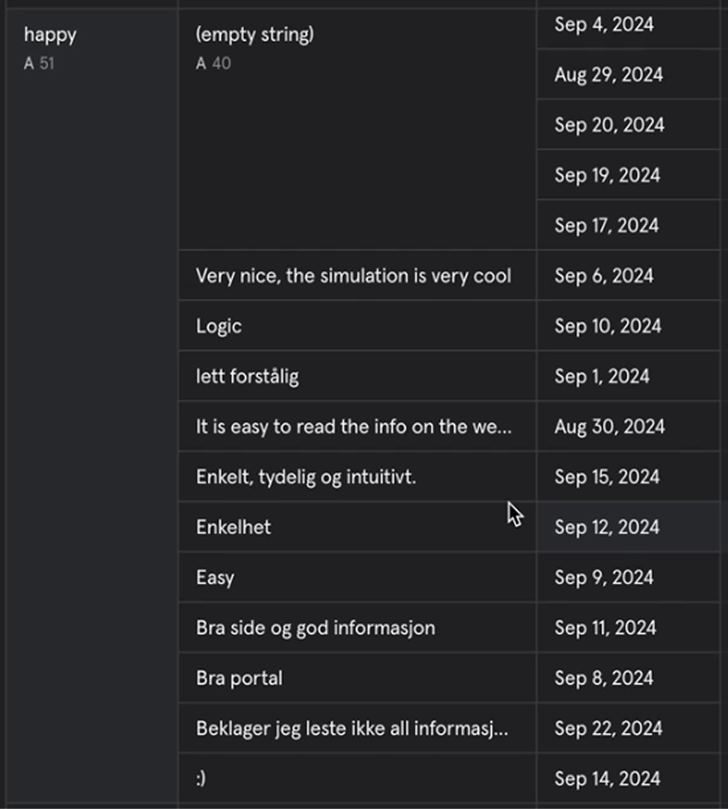

Designing financial reporting tools for reliable, complete, self-service equity reporting. My role was to help build complex, audit-critical modules that enable Optio's company administrators and auditors to generate fully automated and compliant equity reports — without relying on support or engineering.
The goal was to bring more clarity, transparency, and trust to reporting that's usually painful and packed with rules, formulas, and high-stakes decisions.
01Overview
Problem summary
Reporting at Optio was held together by manual work. Data lived across tools, formatting drifted between teams, and small errors triggered review loops that slowed delivery for finance leads, auditors and accounting partners. The product technically supported reporting, but the actual workflow lived in spreadsheets, Slack threads and email exports.
How I framed it
The brief sounded like a UI redesign, but the real question was different: which parts of the reporting cycle should the product own, and which parts will always belong to the finance team's judgment? I treated that boundary as the design problem. Anything mechanical (data assembly, formatting, validation) should move into the product. Anything judgemental (interpretation, exceptions, narrative) should stay with finance — but be supported with better context.
Goal
- Replace manual reporting prep with one configurable surface — not a single static template.
- Reduce error risk by moving validation, FX and turnover logic out of spreadsheets.
- Make reporting reusable across scales, accuracy categories and report types — without forking the design.
02Core Challenges
The challenge wasn't tooling — it was orchestration. Finance teams needed a self-serve product that respected deep domain rules without forcing them back into spreadsheets, and the design had to land without breaking compliance.
- Deep domain knowledge — high learning curve for the design team.
- Complex data relationships — risks of mismapping cascade across reports.
- Technical constraints — calculations had to stay accurate without sacrificing UX.
My approach
- Worked closely with finance experts and clients on discovery — not handed off.
- Introduced progressive disclosure, guided flows, and AI-assisted UI to keep complexity invisible to the user.
- Continuous syncs with engineers and a prototype validation loop with finance partners.
03Key Solutions
Across two years I worked on three shifts that changed how companies configure, generate and approve their financial reports.
Customisable self-service reporting
The hardest design question here was: how do we let clients configure something this complex without giving them enough rope to break their own audit trail? My approach was to treat configuration as a guided journey, not a settings panel. Each decision point appears in the order finance teams actually need to make it, with the consequence visible inline before they confirm.
Concretely, that meant:
- Guided creation flows that surface only the choices that matter at each step, and explain why each one is being asked.
- Built-in revaluation controls so adjustments stay reversible and reviewable — never a one-way door.
- Sophisticated configuration logic kept behind sensible defaults, so the easy path is also the safe path.
- Modular layouts that scale to new report types without forcing a redesign of the system.

Integrated valuation service
Fair Value calculations were the most error-prone part of the old workflow — and the most expensive to get wrong. The temptation was to expose every parameter as a form field. I argued the opposite: anything an admin shouldn't change without thinking should not look like a quick edit. The flow was designed in ordered steps, with explanations and warnings layered into the path so users couldn't accidentally skip the reasoning.
UX focus:
- A guided FV journey that breaks complex inputs into simple, sequenced steps.
- Inline education — explanations and warnings layered into the flow, not hidden in docs.
- Comparison and history views to see what changed and why.
- Admin-first controls for supported use cases without blocking edge cases.

Custom Overviews (Configurable Grouping)
Different clients wanted different breakdowns — by tier, business unit, country. The product originally answered this with custom development per client, which didn't scale. The design question was: can a single component handle every grouping a finance team can come up with, without becoming a generic spreadsheet?
I rethought the "overview" as a composable surface: a few well-defined dimensions, drag-to-reorder structure and a preview that updates live. The constraint kept it from becoming an open-ended builder; the live preview kept it from feeling like configuration.

FX and Turnover rules flexibility
FX and turnover rules were hardcoded into the engine, which meant any country-specific edge case became an engineering ticket. Moving them into the product made sense in theory — but only if the design stopped admins from quietly breaking the calculation. I treated this as a controlled-edit surface: every change must declare its scope and pass validation before it touches a report.
UX highlights:
- Permission boundaries so only authorised admins could edit critical rules.
- Validation rules to prevent invalid currency pairs, overlapping turnover steps and risky values.
- Safe defaults so users only need to configure values when necessary.

04Key UX Frameworks
We tested directly with clients and auditors with high compliance demands. I owned method choices in partnership with finance experts and clients.
Robust user journeys and low-fidelity sketching


350+ hours of client-driven research and testing
A research insight breakdown — tagged by category and outcome — kept the team honest about what users actually struggled with.

05Collaboration Practices
Working as an automation-focused team, with continuous validation of hypotheses and sketches, kept design and engineering moving in step. The notes below are from teammates over the project run.



06Outcomes
The redesign did more than refine the UI — it changed how Optio employees, Customer Success and Sales interact with the product.
- Complex configurations became a streamlined, automated flow.
- Self-service adoption lowered support and manual intervention.
- Hours reduced in reporting configuration & delivery.
- Scaled to more global regulation requirements.
Before & after


User feedback over time

